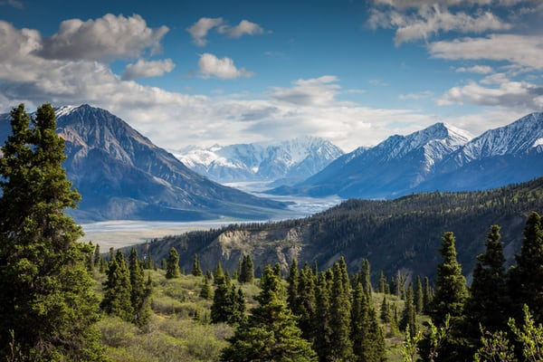

For the road less travelled..

Take only Memories...

Leave only Footprints...

To fuel ur Wanderlust...

twenty-something girl from the India, I ditched my house to live out of a backpack. Cultures call to me, maps lie to me, and I’ll go anywhere so long as there are friendly faces and wild places.
travel through truly off the beaten track countries and destinations, sharing my experiences along the way to encourage understanding, and inspire you to do the same no matter where you’re from.
Triptease is an outdoor travel blog read by over many people across the globe. If you’re a first-time visitor,this is a good place to start. Below, you will find our ‘best of’ collections: curated lists of our most popular content from the last six years. You can also learn more about us, meet the founders (novelist Kia Abdullah and photographer Peter Watson), find out how it all started with our first journey in 2014 and see who we’ve worked with on our press page.